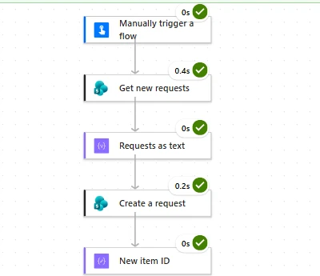
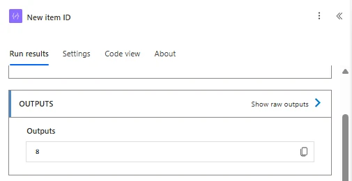

- Power Automate
- Level 3 · Triggers and connectors · 1 of 7
SharePoint triggers and actions
SharePoint lists hold many teams' requests, trackers and registers, so they're often the first thing people automate. The connector gives you triggers that start a flow when items change, and actions to read and write items.
The demo list and flow
WhatTriggers start a flow from list changes; actions read, create, update and delete items.
WhyRequests and trackers live in lists; automating them saves the most manual work.
DemoA Requests list: Title, Status (New/Approved/Rejected), Priority, Amount, Department.
The demo flow
Get items:
Status eq 'New', largest Amount first, top 10Requests as text: Select + Join → one line per request
Create item: add one new request
New item ID → 8

Which trigger?
Pick the trigger by what should start the flow
What should start it?
A new item
When an item is created
Any add or edit
When an item is created or modified
+ trigger condition (next articles)
A deletion
When an item or a file is deleted
A person, from the list
For a selected item
Good to know: SharePoint triggers poll the list, so a run can start a minute or so after the change. Dataverse triggers are pushed instantly.
Get items with a filter
| Setting | Demo value | Why |
|---|---|---|
| Filter Query | Status eq 'New' | Only new requests come back |
| Order By | Amount desc | Largest first |
| Top Count | 10 | Never more than 10 rows |
What came back
| Title | Department | Amount | Status |
|---|---|---|---|
| Monitor arms (x6) | IT | 540 | New |
| Whiteboard markers | Facilities | 40 | New |
Approved and Rejected items were filtered out by SharePoint, not by the flow.

Watch out
- Filters use the column's internal name. Request Status is often
Request_x0020_Status; check the column's settings page address. - Get items returns 100 items by default; turn on pagination for more (Level 5).
Create, update and delete

| Need | How | Watch out |
|---|---|---|
| Create an item | Create item | Choice columns need the choice value; Person columns need an email |
| Change an item | Update item with the Id | Required columns must be filled again, even if unchanged |
| Remove an item | Delete item with the Id | It goes to the site recycle bin |
Choice, Person and link columns
| Read or set | Expression or value | Demo value |
|---|---|---|
| Read a Choice | triggerBody()?['Status']?['Value'] | "Approved" |
| Read a Person | triggerBody()?['AssignedTo']?['Email'] | "alex@contoso.com" |
| Set a Person | the email in the Claims box | alex@contoso.com |
| Link to the item | triggerBody()?['{Link}'] | the item's address |
| Column type | Limit |
|---|---|
| Single line of text | 255 characters |
| Multiple lines of text | 63,999 characters |
Writing longer text to a single-line column fails; use multiple lines for comments, AI output or email bodies.
New to this? Start from the basics optional
Site address and list: every SharePoint step needs both. Put them in environment variables so the flow can move between sites.
Internal name: the fixed technical column name. Renaming a column changes only its display name.
Common mistakes
- Filtering on display names instead of internal names.
- Using created or modified without a trigger condition, so every edit runs the flow.
- Leaving required columns empty in Update item.
- Hard-coding the site address.